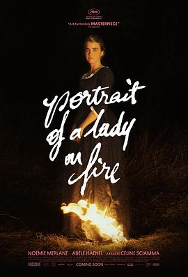

燃烧女子的肖像 / Portrait de la jeune fille en feu
又名：浴火的少女画像(港) / 燃烧女子的画像(台) / 燃烧的女子肖像 / 火吻女孩的肖像 / 浴火女孩肖像画 / 年轻女孩的肖像画 / 烧女图 / 浴火女子像(豆友译名) / Portrait of a Lady on Fire
作品信息
| 导演 | 瑟琳·席安玛 |
| 编剧 | 瑟琳·席安玛 |
| 主演 | 诺米·梅兰特 / 阿黛拉·哈内尔 / 卢安娜·巴杰拉米 / 瓦莱丽亚·戈利诺 / 克里斯特尔·巴拉斯 / 阿曼德·博兰格 / 盖·德拉玛什 / 米歇尔·克莱门特 / 克莱门特·布依索 / 塞西尔·莫雷尔 |
| 类型 | 剧情 / 爱情 / 同性 |
| 制片国家/地区 | 法国 |
| 语言 | 法语 / 意大利语 |
| 上映日期 | 2019-05-19(戛纳电影节) / 2019-09-18(法国) |
| 片长 | 121分钟 |
| IMDb | tt8613070 |
最后一次看到是 2026-08-12T21:11:35+08:00 · 豆瓣原页